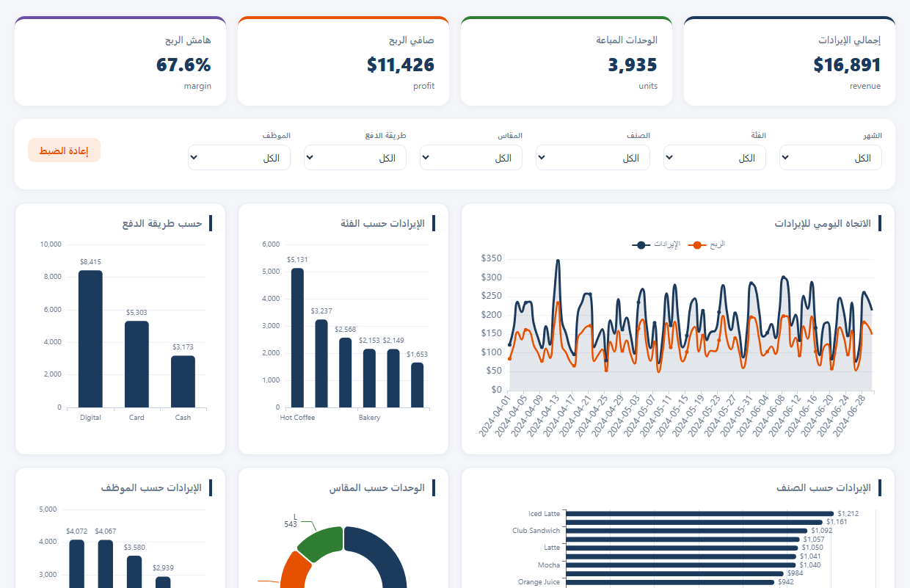

Live interactive version below — full dataset, filters, click-to-filter charts and an Arabic/English switch.
Open the live dashboard
Bilingual Arabic/English interface (RTL + LTR) · filters for month, category, item, size, payment and staff · click any chart to cross-filter.
The brief
- ✓Analyze 3 months of cafe sales (1,044 transactions).
- ✓Track revenue, costs, units and profit per product.
- ✓Build an inventory sheet with reorder points.
- ✓Deliver a live interactive dashboard the owner can share.
What I delivered
- ✓Revenue & profit workbook: 19 items across 6 categories and 3 sizes.
- ✓Inventory sheet with stock levels and reorder alerts.
- ✓Insights: $16.9K revenue, 67.6% margin, top product & payment analysis.
- ✓Interactive bilingual dashboard — 6 charts, live cross-filters, works on mobile.
- ✓Arabic/English toggle with full RTL support.
Data findings
Across 3 months the cafe generated $16,891 in revenue with a strong 67.6% gross margin — $11,426 in profit on 3,935 units sold.
Clicking any category instantly filters the whole view: Bakery accounts for $2,153, and the payment mix shows which channels drive the business. The inventory sheet flags exactly which items need restocking.
The dashboard lets the owner verify every finding themselves — pick any item, size, payment method or staff member and all six charts update instantly, in Arabic or English.
Deliverables included
- ✓Cleaned operations Excel workbook.
- ✓Revenue, cost, profit and inventory sheets.
- ✓Insights report in business language.
- ✓Live bilingual dashboard (self-hosted ECharts).
Stack
- ✓Data cleaning & aggregation — Python / openpyxl.
- ✓Inventory & pivot modeling — Excel.
- ✓Interactive charts — ECharts (self-hosted, no CDN).
- ✓Hosted on GitHub Pages & Vercel with quality checks.
Need the same for your business?
Send your data file — you get a clear plan, professional proposal and a live dashboard you can share.